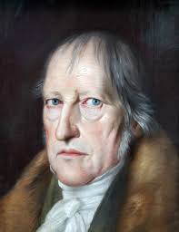
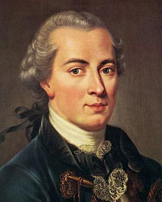
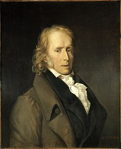

«La libertad no es solo ausencia de interferencia, sino también la capacidad de autodeterminación.»
Filósofo e historiador de las ideas británico de origen ruso. En su obra más famosa, distingue entre libertad negativa (ausencia de coacción) y positiva (autodominio), analizando sus implicaciones políticas en el contexto de la Guerra Fría.
Isaiah Berlin en 1983
Isaiah Berlin en 1957, cerca de la fecha de su conferencia
Berlin, nacido en Riga en 1909 y emigrado a Inglaterra en 1921 tras la Revolución Rusa, vivió las convulsiones del nazismo y el estalinismo, lo que influyó en su visión de la libertad.
Escrita en plena Guerra Fría (1958), la obra distingue entre libertad negativa y positiva, analizando modelos liberales (EE.UU.) versus totalitarios (URSS). A pesar del contexto, sus ideas son atemporales, ya que los enemigos de la libertad pueden reaparecer bajo nuevos ropajes.
Berlin advierte sobre el poder destructivo de las ideas filosóficas y la necesidad de delimitar los dos tipos de libertad.
John Locke, defensor de la libertad negativa
Libertad negativa es el espacio donde un individuo actúa sin interferencia deliberada de otros. Cuanto mayor el espacio de no interferencia, mayor la libertad.
No puede ser ilimitada, ya que llevaría al caos; liberales como Locke, Mill, Constant y Tocqueville proponen límites legales para proteger una esfera mínima inviolable.
Berlin critica que en sociedades desiguales, la libertad de unos se base en la miseria de otros, pero enfatiza que libertad no es igualdad o justicia: sacrificarla por estos no aumenta la libertad global.
Adam Smith veía armonía en un territorio privado amplio; Hobbes prefería poder estatal fuerte. Ambas visiones respetan un mínimo inviolable para evitar despotismo.
Conceptos como ley natural o derechos naturales definen este mínimo. La libertad negativa frena abusos de autoridad, propaganda y mediocridad colectiva.

Hegel, influido en la libertad positiva
Libertad positiva es el deseo de ser amo de uno mismo, decidir por sí. Contrasta con ser esclavo si otros deciden.
Berlin distingue "yo racional" (superior, colectivo) vs. "yo irracional" (empírico, pasional). El "yo auténtico" puede ser una totalidad social (tribu, Estado), justificando coacción para "liberar" al yo racional latente.
Esto lleva a "monstruosa suplantación": forzar individuos por el bien colectivo, interpretado por elites.
Marx veía instituciones sociales como obstáculos al progreso; solo al reconocerlas como creaciones humanas se emancipa la sociedad.
En sociedades racionales, leyes son aceptadas por todos; coacción es "emancipación". Berlin coincide con Bentham: leyes reprimen, no liberan.
Educación como herramienta para racionalizar, pero lleva a paternalismo: "el sabio te conoce mejor". Abre puerta a dictadores o guardianes platónicos.

Immanuel Kant, crítico del paternalismo
Ante obstáculos externos, el individuo se repliega a su "ciudadela interior", intangible a fuerzas exteriores (ascetas, estoicos, budistas).
Kant: paternalismo es el mayor despotismo. Rechaza utilitarismo de premios/castigos para "felicidad" de esclavos.
Berlin: mentir o usar a otros como medios es tratarlos como infrahumanos. Esta retirada surge en mundos crueles, pero es antítesis de libertad política.
Exhorta a resistir o atacar coacciones; liberación total solo con muerte (Schopenhauer).

Benjamin Constant, enfatizó límites al poder
Falta de libertad puede ser falta de reconocimiento: no ser ignorado o ninguneado. Legitima sometimiento voluntario a dictadores "propios" por paz y comodidad.
Constant: problema no es quién tiene autoridad, sino cuánta; acumulación de poder oprime.
Sociedad libre: derechos absolutos, fronteras inviolables. Pluralismo (negativa) preferible a monismo (positiva): fines humanos múltiples, en conflicto.
Berlin cita a Schumpeter: defender convicciones relativas resueltamente distingue civilizado de bárbaro.
Caída del Muro de Berlín en 1989, simbolizando fin de totalitarismos
Con la caída del comunismo, totalitarismos advertidos por Berlin desaparecen, pero modelo liberal se vuelve monista sin contrapeso.
Expansión capitalista (años 90-2007) abusa de libertad negativa; desfavorecidos reclaman positiva para equilibrio.
Modelo europeo (socialdemocracias, Estado de Bienestar) como síntesis razonable, pero riesgos: desequilibrios en regímenes no occidentales y nuevas formas de despotismo bajo apariencia democrática.
Estos ejemplos muestran cómo la negativa protege del abuso externo, mientras la positiva puede justificar coacción en nombre del "bien superior".